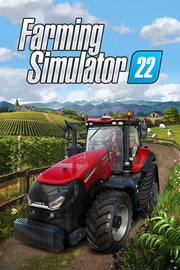

|  | |
| Tiempo de juego | No Jugado |
| Última actividad | Nunca |
| Añadido | 11/6/2024 14:41:31 |
| Modificado | 11/8/2024 17:34:15 |
| Estado de finalización | No Jugado |
| Librería | Playnite |
| Fuente | 6TB STORE |
| Plataforma | PC (Windows) |
| Fecha de lanzamiento | 11/21/2021 |
| Puntuación de la Comunidad | 91 |
| Puntuación de la Crítica | |
| Puntuación de usuario | |
| Género | Simuladores |
| Desarrollador | Giants Software |
| Editor | Giants Software |
| Característica | Cloud Saves Compat. Total Con Mando Cooperativo Cooperativo En Línea Cromos De Logros De Multijugador Multijugador Multiplataforma Préstamo Familiar Remote Play En TV Un Jugador |
| Enlaces | Punto de encuentro Discusiones Guías Noticias Página de la tienda PCGamingWiki Logros |
| Tag | 3D Agricultura América Caballos Cooperativos Cooperativos en línea Economía Gestión Modificables Multijugador Mundo abierto Naturaleza Para toda la familia Personalización de personajes Primera persona Sandbox Simulación Simulador agrícola Simulador inmersivo Tercera persona |